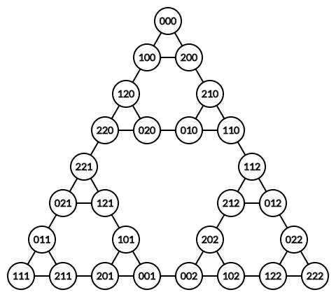
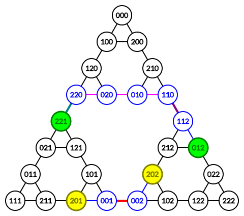

X 同学自从学会了汉诺塔游戏之后就非常沉迷。
汉诺塔游戏由三根柱子 (标号为 $0, 1, 2$) 和一堆体积不同的圆盘组成。每根柱子上有一些圆盘。如果每根柱子上的圆盘体积都满足从上到下依次增大，那么称之为合法状态，否则为非法状态。
从一个状态出发，可以将一个柱子最顶端的圆盘移到另一根柱子上，若移动之后仍是合法状态，则称这一步移动为 "合法的"。
现在给定合法的起始状态和结束状态，我们需要通过一系列 "合法的" 步骤将起始状态变换至结束状态。
由于移动每一步都需要体力，X 同学想寻找移动步数最少的方案 (最优方案)。
特别地，X 同学对于最优方案下移动了 $k$ 次盘子之后的局面感兴趣，但怎么也玩不好这个游戏，于是来咨询你。
第一行包含一个正整数 $T$ ($T \leq 20$)，表示数据的组数。
对于每组数据，第一行包含两个非负整数 $n$ ($1 \leq n \leq 10^5; 0 \leq k \leq 10^{18}$)，表示有 $n$ 个圆盘，圆盘的体积分别为 $1, 2, \cdots, n$。$k$ 表示移动的次数。
第二行包含 $n$ 个非负整数 $a_1, a_2, \cdots, a_n$ ($0 \leq a_i \leq 2$)，其中 $a_i$ 表示体积为 $i$ 的圆盘一开始所在的柱子标号。
第三行包含 $n$ 个非负整数 $b_1, b_2, \cdots, b_n$ ($0 \leq b_i \leq 2$)，其中 $b_i$ 表示体积为 $i$ 的圆盘最终所在的柱子标号。
可以证明给定每个圆盘所在的柱子后，只存在唯一一种合法状态。数据保证最优方案唯一，且 $k$ 不超过最优方案移动总步数。
对于每组数据，输出一行，包含 $n$ 个整数，其中第 $i$ 个整数表示体积为 $i$ 的圆盘在最优方案下移动了 $k$ 步之后所在的柱子标号。
先从 $n$ 比较小的情况开始考虑，比如 $n = 3$。
考虑所有 $3^n = 27$ 种状态，如果两个状态 $u, v$ 可以通过一步操作互相转化，则在这 $u, v$ 之间连接一条边，这样最终能得到一张 $27$ 个顶点的无向图，如图所示：
仔细观察可以发现，上图其实有着明显的分形结构：$n$ 时的图其实由三张 $n - 1$ 时的图互相连接得到 (其实这也很好理解，每个子图对应最大的圆盘在某一个柱子的情况，而当且仅当其余圆盘均聚集在一个柱子时最大圆盘才能移动)。
设对于 $n$ 的情形所得到的图称为 $G_n$ (上面那张图就是 $G_3$)，那么 $G_n$ 中可以划分为三个同构于 $G_{n-1}$ 的子图，我们将其称为 $G_n$ 的三个部分。
现在考虑有两个 (大小为 $n$ 的) 状态 $A, B$，如果 $A, B$ 在 $G_n$ 的同一个部分中，那么它们之间的最短路显然不会走出这个部分，从而直接转化为大小为 $n - 1$ 的子问题；因此现在不妨假设它们在两个不同部分中。
由对称性，不妨假设 $A$ 在左下角的部分中 (即最大的圆盘在 $1$ 处)，$B$ 在右下角的部分中 (即最大的圆盘在 $2$ 处)。
观察下图可以发现，从左下角到右上角一般有两种路径：
同时，也可以发现，两种路径没有绝对的优劣之分，有时是前者短，有时又是后者比较短。
因此，我们需要把两种可能的候选路径的长度都算出来，最终比较一下谁比较短即可。
当然，在计算的过程中，如果只是观察一个部分，其实都可以转化为一个模型；对于图 $G_{n-1}$ 中的一个位于尖端的顶点 $r$ (如 $000$) 和任意顶点 $v$，求 $\operatorname{dist} \left( r, v \right)$ (因为由熟知结论粉色路径的长度即为 $2^{n-1} - 1$)。
而这个距离是非常好求的，只需利用这张图的分形特点，将原问题转化为子问题即可，具体对应下文中的 getDis 函数。
(ps: 在这道题中会不可避免地用到高精度，不过在本题中使用二进制高精度会比十进制高精度方便很多)
现在我们就可以比较那种策略比较优了，最后就剩下一个输出的问题了。
首先我们容易知道 $k$ 步后处于整条路径的哪一段 (如第一种策略分为两段，走红色边之前和走红色边之后；而第二种策略可以分为三段，走青色边之前，走粉色路径时，和走紫色边之后)。
然后，这几种情况可以转化为：对于图 $G_{n-1}$，设 $r$ 为其尖端顶点，给定 $\forall v \in V \left( G_{n-1} \right)$ 和非负整数 $k$，求这条路径 $r \leadsto v$ 上 "深度" 为 $k$ 的顶点。
也可以理解为，对于上图 ($n = 3$)，设 $r = 000$，那么将所有 "水平方向" 的边去掉之后，这样会得到一棵树，求某个点的 $k$ 级祖先。
其实，只需仍然利用该图的分形特点即可解决，最终转化得到的一个基本问题就是两个尖端顶点之间路径的输出，这是一个基础的 Hanoi 问题了，这里就不太赘述。
综上，本题可以在 $O \left( n \right)$ 的时间复杂度内解决 (使用二进制高精度只需要实现加减法和比较)。
#include <bits/stdc++.h>
using std::cin;
using std::cout;
using std::vector;
typedef unsigned int u32;
typedef unsigned long long u64;
typedef long long ll;
const int N = 100054;
struct binary : vector <u32> {
inline void set(int x) {at(x >> 5) |= 1u << (x & 31);}
inline void reset(int x) {at(x >> 5) &= ~(1u << (x & 31));}
inline void set(int x, bool v) {v ? set(x) : reset(x);}
inline bool test(int x) {return at(x >> 5) >> (x & 31) & 1;}
inline friend binary operator + (const binary &A, const binary &B) {
int i, n = std::max(A.size(), B.size()) + 1; u32 A_bit, B_bit;
binary ret; ret.resize(n);
for (i = 0; i < n; ++i) {
A_bit = i < (int)A.size() ? A[i] : 0;
B_bit = i < (int)B.size() ? B[i] : 0;
if ((u64)ret[i] + A_bit + B_bit >= 0x100000000ull) ++ret[i + 1];
ret[i] += A_bit + B_bit;
}
return ret;
}
inline friend binary operator - (const binary &A, const binary &B) {
int i, n = std::max(A.size(), B.size()) + 1; u32 A_bit, B_bit;
binary ret; ret.resize(n);
for (i = 0; i < n; ++i) {
A_bit = i < (int)A.size() ? A[i] : 0;
B_bit = i < (int)B.size() ? B[i] : 0;
if ((u64)A_bit + (-ret[i]) < B_bit) --ret[i + 1];
ret[i] += A_bit - B_bit;
}
return ret;
}
inline binary & operator += (const binary &B) {return *this = *this + B;}
inline friend int compare(const binary &A, const binary &B) {
int i, n = std::max(A.size(), B.size()) + 1; u32 A_bit, B_bit;
for (i = n - 1; i >= 0; --i) {
A_bit = i < (int)A.size() ? A[i] : 0;
B_bit = i < (int)B.size() ? B[i] : 0;
if (A_bit != B_bit) return A_bit < B_bit ? -1 : 1;
}
return 0;
}
};
ll K;
int n, m;
int a[N], b[N], ans[N];
int out2in[3], in2out[3];
binary Ai, Bi, bK;
inline void setmap(int x, int y) {out2in[x] = y, in2out[y] = x;}
binary getDis(int n, int *a, int key = 0) {
int i; binary ret; ret.resize((n >> 5) + 1);
for (i = n - 1; i >= 0; --i)
if (a[i] == key) ret.reset(i);
else ret.set(i), key ^= a[i] ^ 3;
return ret;
}
void std_sequence(int n, binary to, int A0, int A1, int *ans) {
int i, A2 = A0 ^ A1 ^ 3;
for (i = n - 1; i >= 0; --i)
if (to.test(i)) ans[i] = A1, std::swap(A0, A2);
else ans[i] = A0, std::swap(A1, A2);
}
void jump_until(int n, int *a, binary to, int *ans, int key = 0) {
binary from = getDis(n, a, key);
int i, cmp = compare(from, to);
assert(cmp >= 0);
if (!cmp) {memcpy(ans, a, n << 2); return;}
for (i = n - 1; i >= 0; --i)
if (from.test(i) == to.test(i)) {
if (from.test(i)) key ^= a[i] ^ 3;
ans[i] = a[i];
} else {
assert(from.test(i) && !to.test(i));
ans[i] = key, std_sequence(i, to, key, key ^ a[i] ^ 3, ans);
return;
}
}
binary getStrategy1() {
binary ret; ret.resize((n >> 5) + 1);
ret.set(0);
return ret + getDis(n - 1, a, 0) + getDis(n - 1, b, 0);
}
binary getStrategy2() {
binary ret; ret.resize((n >> 5) + 1);
ret.set(0), ret.set(n - 1);
return ret + getDis(n - 1, a, 2) + getDis(n - 1, b, 1);
}
void printStrategy1() {
binary U = getDis(n - 1, a, 0), V = getDis(n - 1, b, 0), one, dep;
one.resize(1), one.set(0);
if (compare(bK, U) <= 0) {
dep = U - bK;
jump_until(n - 1, a, dep, ans, 0), ans[n - 1] = 1;
} else {
dep = bK - (U + one);
jump_until(n - 1, b, dep, ans, 0), ans[n - 1] = 2;
}
}
void printStrategy2() {
binary U = getDis(n - 1, a, 2), V, W = getDis(n - 1, b, 1), one, dep;
one.resize(1), one.set(0);
V.resize((n >> 5) + 1), V.set(0), V.set(n - 1);
if (compare(bK, U) <= 0) {
dep = U - bK;
jump_until(n - 1, a, dep, ans, 2), ans[n - 1] = 1;
} else if (compare(bK, U + V) < 0) {
dep = bK - (U + one);
std_sequence(n - 1, dep, 2, 1, ans), ans[n - 1] = 0;
} else {
dep = bK - (U + V);
jump_until(n - 1, b, dep, ans, 1), ans[n - 1] = 2;
}
}
void work() {
int i, cmp;
cin >> n >> K, m = n;
for (i = 0; i < n; ++i) cin >> a[i];
for (i = 0; i < n; ++i) cin >> b[i];
for (; n && a[n - 1] == b[n - 1]; --n);
if (!n) {
for (i = 0; i < m; ++i) cout << a[i] << (i == m - 1 ? '\n' : ' ');
return;
}
if (n == 1) {
for (i = 0; i < m; ++i) cout << (K ? b[i] : a[i]) << (i == m - 1 ? '\n' : ' ');
return;
}
assert(a[n - 1] != b[n - 1]);
setmap(a[n - 1], 1), setmap(b[n - 1], 2), setmap(a[n - 1] ^ b[n - 1] ^ 3, 0);
for (i = 0; i < n; ++i) a[i] = out2in[a[i]], b[i] = out2in[b[i]];
for (i = n; i < m; ++i) ans[i] = out2in[a[i]];
assert(a[n - 1] == 1 && b[n - 1] == 2);
Ai = getStrategy1();
Bi = getStrategy2();
cmp = compare(Ai, Bi);
bK.resize(2), bK[0] = K & UINT_MAX, bK[1] = K >> 32;
if (cmp < 0) printStrategy1();
else if (cmp > 0) printStrategy2();
else fputs("Equal failed.\n", stderr), abort();
for (i = 0; i < m; ++i) cout << in2out[ans[i]] << (i == m - 1 ? '\n' : ' ');
}
int main() {
int T;
std::ios::sync_with_stdio(false), cin.tie(NULL);
for (cin >> T; T; --T) work();
return 0;
}
坑1：在相关二进制操作的时候记得算清楚是哪一位，不要将 $2^{n-1}$ 算成 $2^{n+1}$ 等。
坑2：如果二进制高精度压 $32$ 位 (unsigned int)，那么在判断进/退位时注意写法，如 unsigned int 会下溢等。